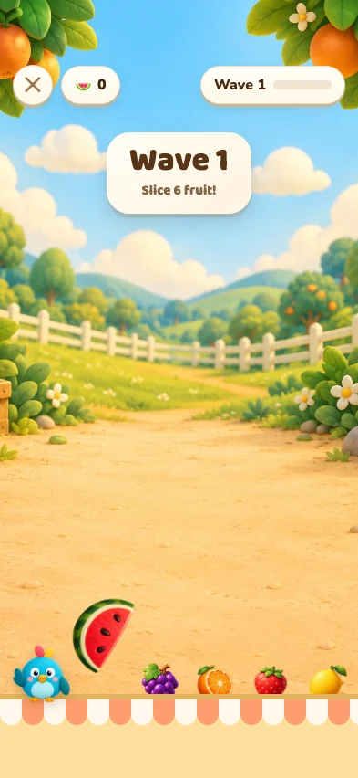
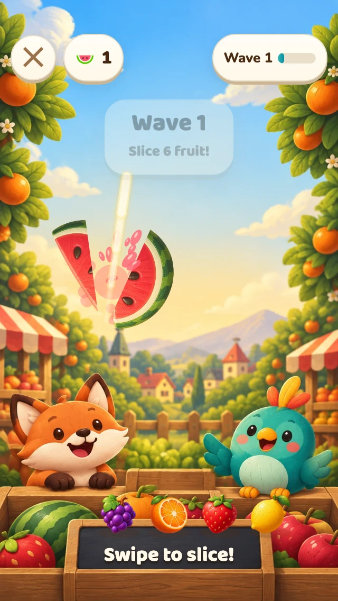

The original artwork is the visual target.

The version you flagged: small fruit, missing characters and too much empty ground.
Recorded from the running game with real swipes. Larger fruit, full-size cut halves, juice, a bright slice trail, and the illustrated market. Video is muted.

Checked on small and larger phones
Controls and instructions fit at 320 × 568 and 393 × 852, including simulated iPhone safe areas. Gameplay and microphone checks passed. A physical iPhone check is still needed.
This correction covers Fruit Slice gameplay. Piano Tiles and Block Stacker are the next visual passes; the rest of the redesign is still in progress.